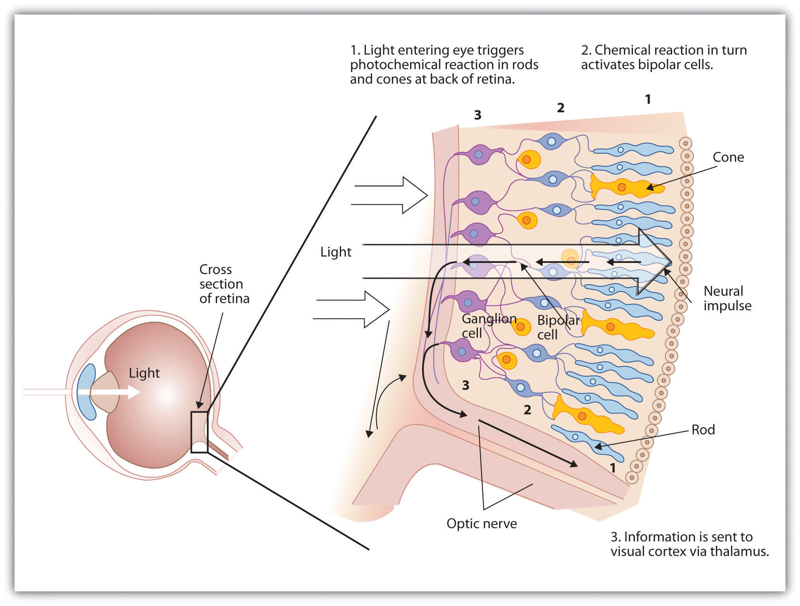

Whereas other animals rely primarily on hearing, smell, or touch to understand the world around them, human beings rely in large part on vision. A large part of our cerebral cortex is devoted to seeing, and we have substantial visual skills. Seeing begins when light falls on the eyes, initiating the process of transduction. Once this visual information reaches the visual cortex, it is processed by a variety of neurons that detect colors, shapes, and motion, and that create meaningful perceptions out of the incoming stimuli.
The air around us is filled with a sea of electromagnetic energy; pulses of energy waves that can carry information from place to place. As you can see in Figure 4.6 "The Electromagnetic Spectrum", electromagnetic waves vary in their wavelengthThe distance between one wave peak and the next wave peak.—the distance between one wave peak and the next wave peak, with the shortest gamma waves being only a fraction of a millimeter in length and the longest radio waves being hundreds of kilometers long. Humans are blind to almost all of this energy—our eyes detect only the range from about 400 to 700 billionths of a meter, the part of the electromagnetic spectrum known as the visible spectrum.
Figure 4.6 The Electromagnetic Spectrum
Only a small fraction of the electromagnetic energy that surrounds us (the visible spectrum) is detectable by the human eye.
As you can see in Figure 4.7 "Anatomy of the Human Eye", light enters the eye through the corneaA clear covering that protects the eye and begins to focus the incoming light., a clear covering that protects the eye and begins to focus the incoming light. The light then passes through the pupilThe small opening in the center of the eye that allows light to enter., a small opening in the center of the eye. The pupil is surrounded by the irisThe colored part of the eye that controls the size of the pupil by constricting or dilating in response to light intensity., the colored part of the eye that controls the size of the pupil by constricting or dilating in response to light intensity. When we enter a dark movie theater on a sunny day, for instance, muscles in the iris open the pupil and allow more light to enter. Complete adaptation to the dark may take up to 20 minutes.
Behind the pupil is the lensA structure that focuses the incoming light on the retina., a structure that focuses the incoming light on the retinaThe layer of tissue at the back of the eye that contains photoreceptor cells., the layer of tissue at the back of the eye that contains photoreceptor cells. As our eyes move from near objects to distant objects, a process known as visual accommodation occurs. Visual accommodationThe process of changing the curvature of the lens to keep the light entering the eye focused on the retina. is the process of changing the curvature of the lens to keep the light entering the eye focused on the retina. Rays from the top of the image strike the bottom of the retina and vice versa, and rays from the left side of the image strike the right part of the retina and vice versa, causing the image on the retina to be upside down and backward. Furthermore, the image projected on the retina is flat, and yet our final perception of the image will be three dimensional.
Figure 4.7 Anatomy of the Human Eye

Light enters the eye through the transparent cornea, passing through the pupil at the center of the iris. The lens adjusts to focus the light on the retina, where it appears upside down and backward. Receptor cells on the retina send information via the optic nerve to the visual cortex.
Accommodation is not always perfect, and in some cases the light that is hitting the retina is a bit out of focus. As you can see in Figure 4.8 "Normal, Nearsighted, and Farsighted Eyes", if the focus is in front of the retina, we say that the person is nearsighted, and when the focus is behind the retina we say that the person is farsighted. Eyeglasses and contact lenses correct this problem by adding another lens in front of the eye, and laser eye surgery corrects the problem by reshaping the eye’s own lens.
Figure 4.8 Normal, Nearsighted, and Farsighted Eyes
For people with normal vision (left), the lens properly focuses incoming light on the retina. For people who are nearsighted (center), images from far objects focus too far in front of the retina, whereas for people who are farsighted (right), images from near objects focus too far behind the retina. Eyeglasses solve the problem by adding a secondary, corrective, lens.
The retina contains layers of neurons specialized to respond to light (see Figure 4.9 "The Retina With Its Specialized Cells"). As light falls on the retina, it first activates receptor cells known as rods and cones. The activation of these cells then spreads to the bipolar cells and then to the ganglion cells, which gather together and converge, like the strands of a rope, forming the optic nerve. The optic nerveA collection of millions of ganglion neurons that sends vast amounts of visual information, via the thalamus, to the brain. is a collection of millions of ganglion neurons that sends vast amounts of visual information, via the thalamus, to the brain. Because the retina and the optic nerve are active processors and analyzers of visual information, it is not inappropriate to think of these structures as an extension of the brain itself.
Figure 4.9 The Retina With Its Specialized Cells
When light falls on the retina, it creates a photochemical reaction in the rods and cones at the back of the retina. The reactions then continue to the bipolar cells, the ganglion cells, and eventually to the optic nerve.
RodsVisual neurons that specialize in detecting black, white, and gray colors. are visual neurons that specialize in detecting black, white, and gray colors. There are about 120 million rods in each eye. The rods do not provide a lot of detail about the images we see, but because they are highly sensitive to shorter-waved (darker) and weak light, they help us see in dim light, for instance, at night. Because the rods are located primarily around the edges of the retina, they are particularly active in peripheral vision (when you need to see something at night, try looking away from what you want to see). ConesVisual neurons that are specialized in detecting fine detail and colors. are visual neurons that are specialized in detecting fine detail and colors. The 5 million or so cones in each eye enable us to see in color, but they operate best in bright light. The cones are located primarily in and around the foveaThe central point of the retina., which is the central point of the retina.
To demonstrate the difference between rods and cones in attention to detail, choose a word in this text and focus on it. Do you notice that the words a few inches to the side seem more blurred? This is because the word you are focusing on strikes the detail-oriented cones, while the words surrounding it strike the less-detail-oriented rods, which are located on the periphery.
Figure 4.10 Mona Lisa’s Smile
Margaret Livingstone (2002)Livingstone M. S. (2000). Is it warm? Is it real? Or just low spatial frequency? Science, 290, 1299. found an interesting effect that demonstrates the different processing capacities of the eye’s rods and cones—namely, that the Mona Lisa’s smile, which is widely referred to as “elusive,” is perceived differently depending on how one looks at the painting. Because Leonardo da Vinci painted the smile in low-detail brush strokes, these details are better perceived by our peripheral vision (the rods) than by the cones. Livingstone found that people rated the Mona Lisa as more cheerful when they were instructed to focus on her eyes than they did when they were asked to look directly at her mouth. As Livingstone put it, “She smiles until you look at her mouth, and then it fades, like a dim star that disappears when you look directly at it.”
Source: Photo courtesy of the Louvre Museum, http://commons.wikimedia.org/wiki/File:Mona_Lisa_detail_face.jpg.
As you can see in Figure 4.11 "Pathway of Visual Images Through the Thalamus and Into the Visual Cortex", the sensory information received by the retina is relayed through the thalamus to corresponding areas in the visual cortex, which is located in the occipital lobe at the back of the brain. Although the principle of contralateral control might lead you to expect that the left eye would send information to the right brain hemisphere and vice versa, nature is smarter than that. In fact, the left and right eyes each send information to both the left and the right hemisphere, and the visual cortex processes each of the cues separately and in parallel. This is an adaptational advantage to an organism that loses sight in one eye, because even if only one eye is functional, both hemispheres will still receive input from it.
Figure 4.11 Pathway of Visual Images Through the Thalamus and Into the Visual Cortex
The left and right eyes each send information to both the left and the right brain hemisphere.
The visual cortex is made up of specialized neurons that turn the sensations they receive from the optic nerve into meaningful images. Because there are no photoreceptor cells at the place where the optic nerve leaves the retina, a hole or blind spot in our vision is created (see Figure 4.12 "Blind Spot Demonstration"). When both of our eyes are open, we don’t experience a problem because our eyes are constantly moving, and one eye makes up for what the other eye misses. But the visual system is also designed to deal with this problem if only one eye is open—the visual cortex simply fills in the small hole in our vision with similar patterns from the surrounding areas, and we never notice the difference. The ability of the visual system to cope with the blind spot is another example of how sensation and perception work together to create meaningful experience.
Figure 4.12 Blind Spot Demonstration
You can get an idea of the extent of your blind spot (the place where the optic nerve leaves the retina) by trying this demonstration. Close your left eye and stare with your right eye at the cross in the diagram. You should be able to see the elephant image to the right (don’t look at it, just notice that it is there). If you can’t see the elephant, move closer or farther away until you can. Now slowly move so that you are closer to the image while you keep looking at the cross. At one distance (probably a foot or so), the elephant will completely disappear from view because its image has fallen on the blind spot.
Perception is created in part through the simultaneous action of thousands of feature detector neuronsSpecialized neurons, located in the visual cortex, that respond to the strength, angles, shapes, edges, and movements of a visual stimulus.—specialized neurons, located in the visual cortex, that respond to the strength, angles, shapes, edges, and movements of a visual stimulus (Kelsey, 1997; Livingstone & Hubel, 1988).Kelsey, C.A. (1997). Detection of visual information. In W. R. Hendee & P. N. T. Wells (Eds.), The perception of visual information (2nd ed.). New York, NY: Springer Verlag; Livingstone, M., & Hubel, D. (1998). Segregation of form, color, movement, and depth: Anatomy, physiology, and perception. Science, 240, 740–749. The feature detectors work in parallel, each performing a specialized function. When faced with a red square, for instance, the parallel line feature detectors, the horizontal line feature detectors, and the red color feature detectors all become activated. This activation is then passed on to other parts of the visual cortex where other neurons compare the information supplied by the feature detectors with images stored in memory. Suddenly, in a flash of recognition, the many neurons fire together, creating the single image of the red square that we experience (Rodriguez et al., 1999).Rodriguez, E., George, N., Lachaux, J.-P., Martinerie, J., Renault, B., & Varela, F. J. (1999). Perception’s shadow: Long-distance synchronization of human brain activity. Nature, 397(6718), 430–433.
Figure 4.13 The Necker Cube

The Necker cube is an example of how the visual system creates perceptions out of sensations. We do not see a series of lines, but rather a cube. Which cube we see varies depending on the momentary outcome of perceptual processes in the visual cortex.
Some feature detectors are tuned to selectively respond to particularly important objects, for instance, faces, smiles, and other parts of the body (Downing, Jiang, Shuman, & Kanwisher, 2001; Haxby et al., 2001).Downing, P. E., Jiang, Y., Shuman, M., & Kanwisher, N. (2001). A cortical area selective for visual processing of the human body. Science, 293(5539), 2470–2473; Haxby, J. V., Gobbini, M. I., Furey, M. L., Ishai, A., Schouten, J. L., & Pietrini, P. (2001). Distributed and overlapping representations of faces and objects in ventral temporal cortex. Science, 293(5539), 2425–2430. When researchers disrupted face recognition areas of the cortex using the magnetic pulses of transcranial magnetic stimulation (TMS), people were temporarily unable to recognize faces, and yet they were still able to recognize houses (McKone, Kanwisher, & Duchaine, 2007; Pitcher, Walsh, Yovel, & Duchaine, 2007).McKone, E., Kanwisher, N., & Duchaine, B. C. (2007). Can generic expertise explain special processing for faces? Trends in Cognitive Sciences, 11, 8–15; Pitcher, D., Walsh, V., Yovel, G., & Duchaine, B. (2007). TMS evidence for the involvement of the right occipital face area in early face processing. Current Biology, 17, 1568–1573.
It has been estimated that the human visual system can detect and discriminate among 7 million color variations (Geldard, 1972),Geldard, F. A. (1972). The human senses (2nd ed.). New York, NY: John Wiley & Sons. but these variations are all created by the combinations of the three primary colors: red, green, and blue. The shade of a color, known as hueColor conveyed by the wavelength of the light that enters the eye., is conveyed by the wavelength of the light that enters the eye (we see shorter wavelengths as more blue and longer wavelengths as more red), and we detect brightness from the intensity or height of the wave (bigger or more intense waves are perceived as brighter).
Figure 4.14 Low- and High-Frequency Sine Waves and Low- and High-Intensity Sine Waves and Their Corresponding Colors
Light waves with shorter frequencies are perceived as more blue than red; light waves with higher intensity are seen as brighter.
In his important research on color vision, Hermann von Helmholtz (1821–1894) theorized that color is perceived because the cones in the retina come in three types. One type of cone reacts primarily to blue light (short wavelengths), another reacts primarily to green light (medium wavelengths), and a third reacts primarily to red light (long wavelengths). The visual cortex then detects and compares the strength of the signals from each of the three types of cones, creating the experience of color. According to this Young-Helmholtz trichromatic color theoryThe theory of color perception that proposes that what color we see depends on the mix of the signals from the three types of cones., what color we see depends on the mix of the signals from the three types of cones. If the brain is receiving primarily red and blue signals, for instance, it will perceive purple; if it is receiving primarily red and green signals it will perceive yellow; and if it is receiving messages from all three types of cones it will perceive white.
The different functions of the three types of cones are apparent in people who experience color blindnessThe inability to detect either green and/or red colors.—the inability to detect either green and/or red colors. About 1 in 50 people, mostly men, lack functioning in the red- or green-sensitive cones, leaving them only able to experience either one or two colors (Figure 4.15).
Figure 4.15
People with normal color vision can see the number 42 in the first image and the number 12 in the second (they are vague but apparent). However, people who are color blind cannot see the numbers at all.
The trichromatic color theory cannot explain all of human vision, however. For one, although the color purple does appear to us as a mixing of red and blue, yellow does not appear to be a mix of red and green. And people with color blindness, who cannot see either green or red, nevertheless can still see yellow. An alternative approach to the Young-Helmholtz theory, known as the opponent-process color theoryThe theory of color perception that proposes that we analyze sensory information in three sets of “opponent colors”: red-green, yellow-blue, and white-black., proposes that we analyze sensory information not in terms of three colors but rather in three sets of “opponent colors”: red-green, yellow-blue, and white-black. Evidence for the opponent-process theory comes from the fact that some neurons in the retina and in the visual cortex are excited by one color (e.g., red) but inhibited by another color (e.g., green).
One example of opponent processing occurs in the experience of an afterimage. If you stare at the flag on the left side of Figure 4.16 "U.S. Flag" for about 30 seconds (the longer you look, the better the effect), and then move your eyes to the blank area to the right of it, you will see the afterimage. When we stare at the green stripes, our green receptors habituate and begin to process less strongly, whereas the red receptors remain at full strength. When we switch our gaze, we see primarily the red part of the opponent process. Similar processes create blue after yellow and white after black.
Figure 4.16 U.S. Flag

The presence of an afterimage is best explained by the opponent-process theory of color perception. Stare at the flag for a few seconds, and then move your gaze to the blank space next to it. Do you see the afterimage?
Source: Photo courtesy of Mike Swanson, http://en.wikipedia.org/wiki/File:US_flag(inverted).svg.
The tricolor and the opponent-process mechanisms work together to produce color vision. When light rays enter the eye, the red, blue, and green cones on the retina respond in different degrees, and send different strength signals of red, blue, and green through the optic nerve. The color signals are then processed both by the ganglion cells and by the neurons in the visual cortex (Gegenfurtner & Kiper, 2003).Gegenfurtner, K. R., & Kiper, D. C. (2003). Color vision. Annual Review of Neuroscience, 26, 181–206.
One of the important processes required in vision is the perception of form. German psychologists in the 1930s and 1940s, including Max Wertheimer (1880–1943), Kurt Koffka (1886–1941), and Wolfgang Köhler (1887–1967), argued that we create forms out of their component sensations based on the idea of the gestaltA meaningful organized whole., a meaningfully organized whole. The idea of the gestalt is that the “whole is more than the sum of its parts.” Some examples of how gestalt principles lead us to see more than what is actually there are summarized in Table 4.1 "Summary of Gestalt Principles of Form Perception".
Table 4.1 Summary of Gestalt Principles of Form Perception
| Principle | Description | Example | Image |
|---|---|---|---|
| Figure and ground | We structure input such that we always see a figure (image) against a ground (background). | At right, you may see a vase or you may see two faces, but in either case, you will organize the image as a figure against a ground. | Figure 4.1 
|
| Similarity | Stimuli that are similar to each other tend to be grouped together. | You are more likely to see three similar columns among the XYX characters at right than you are to see four rows. | Figure 4.1 |
| Proximity | We tend to group nearby figures together. | Do you see four or eight images at right? Principles of proximity suggest that you might see only four. | Figure 4.1 
|
| Continuity | We tend to perceive stimuli in smooth, continuous ways rather than in more discontinuous ways. | At right, most people see a line of dots that moves from the lower left to the upper right, rather than a line that moves from the left and then suddenly turns down. The principle of continuity leads us to see most lines as following the smoothest possible path. | Figure 4.1 |
| Closure | We tend to fill in gaps in an incomplete image to create a complete, whole object. | Closure leads us to see a single spherical object at right rather than a set of unrelated cones. | Figure 4.1 
|
Depth perceptionThe ability to perceive three-dimensional space and to accurately judge distance. is the ability to perceive three-dimensional space and to accurately judge distance. Without depth perception, we would be unable to drive a car, thread a needle, or simply navigate our way around the supermarket (Howard & Rogers, 2001).Howard, I. P., & Rogers, B. J. (2001). Seeing in depth: Basic mechanisms (Vol. 1). Toronto, Ontario, Canada: Porteous. Research has found that depth perception is in part based on innate capacities and in part learned through experience (Witherington, 2005).Witherington, D. C. (2005). The development of prospective grasping control between 5 and 7 months: A longitudinal study. Infancy, 7(2), 143–161.
Psychologists Eleanor Gibson and Richard Walk (1960)Gibson, E. J., & Walk, R. D. (1960). The “visual cliff.” Scientific American, 202(4), 64–71. tested the ability to perceive depth in 6- to 14-month-old infants by placing them on a visual cliffA mechanism that gives the perception of a dangerous drop-off, in which infants can be safely tested for their perception of depth., a mechanism that gives the perception of a dangerous drop-off, in which infants can be safely tested for their perception of depth (Figure 4.22 "Visual Cliff"). The infants were placed on one side of the “cliff,” while their mothers called to them from the other side. Gibson and Walk found that most infants either crawled away from the cliff or remained on the board and cried because they wanted to go to their mothers, but the infants perceived a chasm that they instinctively could not cross. Further research has found that even very young children who cannot yet crawl are fearful of heights (Campos, Langer, & Krowitz, 1970).Campos, J. J., Langer, A., & Krowitz, A. (1970). Cardiac responses on the visual cliff in prelocomotor human infants. Science, 170(3954), 196–197. On the other hand, studies have also found that infants improve their hand-eye coordination as they learn to better grasp objects and as they gain more experience in crawling, indicating that depth perception is also learned (Adolph, 2000).Adolph, K. E. (2000). Specificity of learning: Why infants fall over a veritable cliff. Psychological Science, 11(4), 290–295.
Figure 4.22 Visual Cliff

Babies appear to have the innate ability to perceive depth, as seen by this baby’s reluctance to cross the “visual cliff.”
Depth perception is the result of our use of depth cuesMessages from our bodies and the external environment that supply us with information about space and distance., messages from our bodies and the external environment that supply us with information about space and distance. Binocular depth cuesDepth cues that are created by retinal disparity—that is, the space between our eyes, and thus require the coordination of both eyes. are depth cues that are created by retinal image disparity—that is, the space between our eyes, and thus which require the coordination of both eyes. One outcome of retinal disparity is that the images projected on each eye are slightly different from each other. The visual cortex automatically merges the two images into one, enabling us to perceive depth. Three-dimensional movies make use of retinal disparity by using 3-D glasses that the viewer wears to create a different image on each eye. The perceptual system quickly, easily, and unconsciously turns the disparity into 3-D.
An important binocular depth cue is convergenceThe inward turning of our eyes that is required to focus on objects that are less than about 50 feet away from us., the inward turning of our eyes that is required to focus on objects that are less than about 50 feet away from us. The visual cortex uses the size of the convergence angle between the eyes to judge the object’s distance. You will be able to feel your eyes converging if you slowly bring a finger closer to your nose while continuing to focus on it. When you close one eye, you no longer feel the tension—convergence is a binocular depth cue that requires both eyes to work.
The visual system also uses accommodation to help determine depth. As the lens changes its curvature to focus on distant or close objects, information relayed from the muscles attached to the lens helps us determine an object’s distance. Accommodation is only effective at short viewing distances, however, so while it comes in handy when threading a needle or tying shoelaces, it is far less effective when driving or playing sports.
Although the best cues to depth occur when both eyes work together, we are able to see depth even with one eye closed. Monocular depth cuesDepth cues that help us perceive depth using only one eye. are depth cues that help us perceive depth using only one eye (Sekuler & Blake, 2006).Sekuler, R., & Blake, R., (2006). Perception (5th ed.). New York, NY: McGraw-Hill. Some of the most important are summarized in Table 4.2 "Monocular Depth Cues That Help Us Judge Depth at a Distance".
Table 4.2 Monocular Depth Cues That Help Us Judge Depth at a Distance
| Name | Description | Example | Image |
|---|---|---|---|
| Position | We tend to see objects higher up in our field of vision as farther away. | The fence posts at right appear farther away not only because they become smaller but also because they appear higher up in the picture. | Figure 4.2 
|
| Relative size | Assuming that the objects in a scene are the same size, smaller objects are perceived as farther away. | At right, the cars in the distance appear smaller than those nearer to us. | Figure 4.2 
|
| Linear perspective | Parallel lines appear to converge at a distance. | We know that the tracks at right are parallel. When they appear closer together, we determine they are farther away. | Figure 4.2 |
| Light and shadow | The eye receives more reflected light from objects that are closer to us. Normally, light comes from above, so darker images are in shadow. | We see the images at right as extending and indented according to their shadowing. If we invert the picture, the images will reverse. | Figure 4.2 |
| Interposition | When one object overlaps another object, we view it as closer. | At right, because the blue star covers the pink bar, it is seen as closer than the yellow moon. | Figure 4.2 
|
| Aerial perspective | Objects that appear hazy, or that are covered with smog or dust, appear farther away. | The artist who painted the picture on the right used aerial perspective to make the clouds more hazy and thus appear farther away. | Figure 4.2 
|
Photo sources: TBD
Many animals, including human beings, have very sophisticated perceptual skills that allow them to coordinate their own motion with the motion of moving objects in order to create a collision with that object. Bats and birds use this mechanism to catch up with prey, dogs use it to catch a Frisbee, and humans use it to catch a moving football. The brain detects motion partly from the changing size of an image on the retina (objects that look bigger are usually closer to us) and in part from the relative brightness of objects.
We also experience motion when objects near each other change their appearance. The beta effectThe perception of motion that occurs when different images are presented next to each other in succession. refers to the perception of motion that occurs when different images are presented next to each other in succession (see Note 4.43 "Beta Effect and Phi Phenomenon"). The visual cortex fills in the missing part of the motion and we see the object moving. The beta effect is used in movies to create the experience of motion. A related effect is the phi phenomenonThe perception of motion caused by the appearance and disappearance of objects that are near each other., in which we perceive a sensation of motion caused by the appearance and disappearance of objects that are near each other. The phi phenomenon looks like a moving zone or cloud of background color surrounding the flashing objects. The beta effect and the phi phenomenon are other examples of the importance of the gestalt—our tendency to “see more than the sum of the parts.”
In the beta effect, our eyes detect motion from a series of still images, each with the object in a different place. This is the fundamental mechanism of motion pictures (movies). In the phi phenomenon, the perception of motion is based on the momentary hiding of an image.
Phi phenomenon: http://upload.wikimedia.org/wikipedia/commons/6/6e/Lilac-Chaser.gif
Beta effect: http://upload.wikimedia.org/wikipedia/commons/0/09/Phi_phenomenom_no_watermark.gif